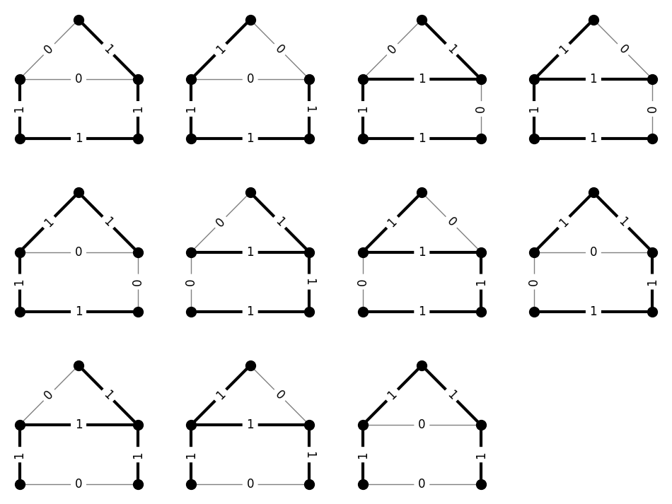

Spanning tree modulus#
%matplotlib inline
import matplotlib.pyplot as plt
import networkx as nx
import numpy as np
import cvxpy as cvx
from itertools import combinations
import random
from modulus_tools.basic_algorithm import matrix_modulus, modulus
from modulus_tools.families.networkx_families import MinimumSpanningTree
from modulus_tools import algorithms as alg
Computing spanning-tree modulus#
Spanning trees form one of the most important families of objects in a graph.
This notebook provides examples of computing the modulus of spanning trees in two ways:
directly via a convex program, and
using the Basic Algorithm.
For the precise definition of modulus, see the nathan-albin.github.io/modulus_book/Introduction in the online modulus book.
For details on the Basic Algorithm, see nathan-albin.github.io/modulus_book/The_Basic_Algorithm.
# 1) Build the "house" graph
G = nx.Graph()
G.add_edges_from([
(0, 1), (1, 2), (2, 3), (3, 0) # square
])
G.add_edge(2, 4)
G.add_edge(3, 4)
pos = {
0: (-1, 0),
1: ( 1, 0),
2: ( 1, 1),
3: (-1, 1),
4: ( 0, 2),
}
# get a list of spanning trees
trees = list(alg.spanning_trees(G))
# number of columns and rows for plot
ncol = 4
nrow = int(np.ceil(len(trees)/ncol))
# draw the trees
plt.figure(figsize=(3*ncol,3*nrow))
for i,tree in enumerate(trees):
plt.subplot(nrow,ncol,i+1)
labels = {(u,v):0 for u,v in G.edges}
labels.update({(u,v):1 for u,v in tree})
edges = tree
nx.draw(G, pos, node_size=100, node_color='black', edge_color='gray')
nx.draw_networkx_edges(G, pos, edgelist=edges, width=3)
nx.draw_networkx_edge_labels(G, pos, edge_labels=labels, font_size=12)

Compute spanning tree modulus using CVXPy#
def matrix(G):
"""
Build the usage matrix N for the family of spanning trees of G.
Each row of N corresponds to a spanning tree (n-1 edges).
Each column corresponds to one edge of G.
Entry = 1 if that spanning tree uses the edge, 0 otherwise.
"""
# Assign an index to each edge and store in G[u][v]['enum']
for i, (u, v) in enumerate(G.edges()):
G[u][v]['enum'] = i
n = len(G.nodes) # number of nodes
N = [] # will collect the rows of the usage matrix
# Loop through all (n-1)-edge subsets of G
for T in combinations(G.edges, n-1):
H = nx.Graph(T) # build subgraph with these edges
if nx.is_tree(H): # check if it is a spanning tree
v = np.zeros(m) # indicator vector for edges
for (a, b) in T:
ind = G[a][b]['enum'] # column index of edge (a,b)
v[ind] = 1
N.append(v)
# Return as a numpy array
return np.array(N)
def modul(N, p, sigma):
"""
Compute the p-modulus of a family (with usage matrix N) via convex optimization.
"""
# number of variables (edges in the graph)
n = N.shape[-1]
# make sigma into a diagonal matrix
S = np.diag(sigma)
# optimization variable: edge density vector rho
rho = cvx.Variable(n)
# apply scaling S^(1/p) to rho
X = (S**(1./p)) @ rho
# objective: minimize ||X||_p^p
obj = cvx.Minimize(cvx.pnorm(X, p) ** p)
# constraints:
# 1. rho >= 0 (nonnegative densities)
# 2. N @ rho >= 1 (admissibility condition)
cons = [rho >= 0, N @ rho >= 1]
# solve the convex program
prob = cvx.Problem(obj, cons)
prob.solve(solver=cvx.SCS)
# return optimal value and vector (as numpy arrays)
return np.array(obj.value).flatten(), np.array(rho.value).flatten()
# 1) Build the "house" graph
G = nx.Graph()
# Square base: nodes 0-1-2-3
G.add_edges_from([
(0, 1), (1, 2), (2, 3), (3, 0) # square
])
# Roof apex node (4), connected to the top two square vertices
G.add_edge(2, 4)
G.add_edge(3, 4)
# 2) Improved "house" layout
pos = {
0: (-1, 0), # bottom-left
1: ( 1, 0), # bottom-right
2: ( 1, 1), # top-right
3: (-1, 1), # top-left
4: ( 0, 2), # roof apex centered above the square
}
# 3) Compute spanning-tree modulus (p = 2 example)
m = len(G.edges())
N = matrix(G) # your spanning-tree usage matrix function
mod, rho = modul(N, 2, np.ones(m))
# 4) Plot η* = rho / mod as edge colors
eta = np.round(rho / mod, 3)
print("Modulus (p=2):", mod.item())
print("η* =", eta)
plt.figure(figsize=(5,5))
nx.draw(
G, pos,
node_size=100, node_color='black',
width=2, edge_color=eta, edge_cmap=plt.cm.Set2
)
plt.axis("equal")
plt.show()
Modulus (p=2): 0.37499916426700797
η* = [0.667 0.667 0.667 0.667 0.667 0.667]
Compute the spanning tree modulus using the Basic Algorithm#
def mod_basic(G):
"""
Compute and visualize the spanning-tree modulus of a graph G using the Basic Algorithm.
"""
# Number of edges (m) passed to the Basic Algorithm
m = len(G.edges())
# Shortest-object oracle for the spanning-tree family
mst = MinimumSpanningTree(G)
# Run the Basic Algorithm (keep the same call/signature as in your code)
mod, cons, rho, lam = modulus(m, matrix_modulus, mst, max_iter=400)
# Return the density vector and modulus value
return rho, mod
# Build a graph
P = nx.complete_graph(6) # nodes 0..5
for u in range(6):
P.add_edge(u, u + 6) # rungs
nx.add_path(P, [6, 7, 8, 9, 10, 11, 6]) # outer ring
# Compute modulus using your basic algorithm wrapper
rho, mod = mod_basic(P)
# Ensure scalar modulus and compute η* = rho / mod
mod_val = mod.item()
eta = np.round(rho / mod_val, 3)
print("Modulus (p=2):", mod_val)
print("η* =", eta)
# Two-ring layout: nodes 0..5 inner circle, nodes 6..11 outer circle
pos = {}
inner_pos = nx.circular_layout(range(6), scale=0.6) # inner K6
outer_pos = nx.circular_layout(range(6, 12), scale=1.2) # outer 6-cycle
pos.update(inner_pos)
pos.update(outer_pos)
# Plot η* as edge colors
plt.figure(figsize=(6, 6))
nx.draw(
P, pos,
node_size=100, node_color='black',
width=2, edge_color=eta, edge_cmap=plt.cm.Set2
)
plt.axis("equal")
plt.show()
Modulus (p=2): 0.21428571428571433
η* = [0.333 0.333 0.333 0.333 0.333 0.5 0.333 0.333 0.333 0.333 0.5 0.333
0.333 0.333 0.5 0.333 0.333 0.5 0.333 0.5 0.5 0.5 0.5 0.5
0.5 0.5 0.5 ]